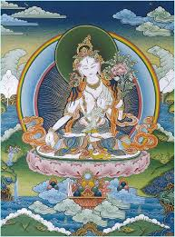

В Тибетском Буддизме Белая Тара узнаваема по таким атрибутам как белый цвет тела, семь глаз на теле, три из которых расположены на лбу, а еще четыре - на ладонях и ступнях. Таким образом, она видит всех живых существ во всех Мирах и Вселенных. Практика Белой Тары главным образом известна, как практика долголетия и устранения помех в жизни. Среди верующих буддистов принят обычай, когда серьезно болен человек обращается не только к врачу, но также приглашают Ламу, который начитывает мантру Белой Тары и служит специальную Пуджу.
Существует также духовная практика слияния ламы с сущностью Белой тары и визуализации помещения больного непосредственно внутрь сердца Тары, что исключительно действенно влияет на ситуацию.
С точки зрения Учения, ценность обретения долгой жизни не в эгоцентрическом упоении собой, но в шансе иметь достаточное время для совершенствования на духовном Пути.
Буддийская богиня Белая тара приносит в дом покой, гармонию и здоровье, поэтому дома хорошо иметь ее изображения, тханку или статуэтку.